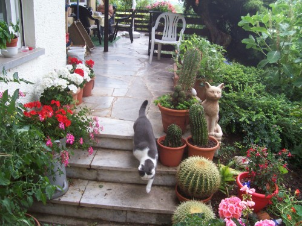

Spenden auf einen Blick
Direkt, transparent und ohne Umwege: Ihre Unterstuetzung hilft unseren Katzen sofort.
Spenden tut Not
Bitte unterstuetzen Sie uns. Jede Spende hilft, Tierelend zu lindern.
Wir moechten keine Katze krank im Stich lassen.
Durch Kastration von Streunerkatzen wollen wir der Verwahrlosung vorbeugen.
Dauerhaft unterstuetzen
Wenn Sie dauerhaft spenden moechten, laden Sie bitte das Spendenformular herunter:
Und senden Sie es uns an:
Fuer Ueberweisungen nutzen Sie bitte die oben angegebene Bankverbindung.
Warum diese Hilfe wichtig ist
Leid von Tieren wird oft uebersehen. Wir moechten genau dort helfen, wo Katzen medizinische Versorgung, Schutz und kontinuierliche Betreuung brauchen.

Fuettern alleine genuegt nicht; sehr oft ist auch kostspielige medizinische Versorgung noetig.
Wofuer wir finanzielle Unterstuetzung brauchen
- 12 EURO mindestens fuer Untersuchung sowie Impfungen gegen Katzenschnupfen und Katzenseuche.
- 20 EURO mindestens fuer Narkose und Schmerzmittel.
- 50 EURO und mehr fuer die Kastration einer Kaetzin.
- 120 EURO mindestens fuer viele operative Eingriffe und Strahlenbehandlungen.
Ihre Spende kommt an
Ihre Spende geht direkt an Katzen in Not: fuer geschuetzte Unterbringung, fuer medizinische Versorgung und fuer die taegliche Betreuung unserer Schuetzlinge.
Schutzgebuehren aus Katzenvermittlungen fliessen ebenfalls in die Versorgung der Tiere. Viele allgemeine Vereinskosten decken wir aus Flohmarkterloesen.
|
 |
|

Wir arbeiten effizient und sparsam. Oeffentlichkeitsarbeit und Verwaltung machen nur einen kleinen Teil unserer Jahresausgaben aus.
Danke fuer Ihre Unterstuetzung.
Wichtiger Hinweis
Leider koennen wir uns nicht immer bei allen Spenderinnen und Spendern bedanken, wenn keine vollstaendige Anschrift vorliegt.
Falls sich Ihr Name oder Ihre Adresse geaendert hat, teilen Sie uns dies bitte mit.
Bitte geben Sie bei Ueberweisungen mindestens PLZ, Strasse und Hausnummer an, falls das Textfeld fuer die volle Anschrift nicht ausreicht.
Vielen Dank.